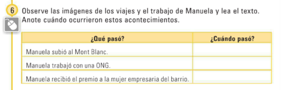

Week 11 - Day 1 (5A)
Start Unidad 5A
-
Audio 0:16:02.643631
-
Activity 1
- Audio 0:17:18.537162
- Observe las fotos de la tarjeta de felicitación (A-D) y clasifíquelas.
- Estudios
- A
- Trabajo
- D
- Familia
- B y C
- Estudios
- Complete la felicitación con los pies de foto correspondientes.
- “Celebraste tu boda.”
- Celebrated your wedding
- B
- “Estudiamos juntos en la universidad en Montevideo”
- We studied at the University of Montevideo
- A
- “Carolina y tú abrieron la tienda”
- Carolina and you opened a shop
- D
- “Nació tu hija Celia.”
- Your daughter Celia was born
- C
- “Celebraste tu boda.”
- Fijese en la tarjeta de felicitación (A-D). Indique si las oraciones son verdaderas (V) o falsas (F).
- Audio 0:20:56.593753
- El 8 de mayo de 1988 Manuela celebró su boda.
- V
- El 21 de agosto de 1994 nació Celia, la hija de Manuela.
- V
- El 30 deiulio de julio de 1998 Manuela y Carolina abrieron la tienda.
- F
- Manuela habla de los días más importantes de su vida. ¿Cuáles son?
Activity 5
| -ar | -er | -ir | |
|---|---|---|---|
| yo | terminé | nací | abrí |
| tú | terminaste | naciste | abriste |
| usted, él, ella | terminó | nació | abrió |
| nostros/as | terminamos | nacimos | abrimos |
| vosotros/as | terminasteis | nacisteis | abristeis |
| ustedes, ellos/as | terminaron | nacieron | abrieron |
- Audio 0:33:33.430143
-
En marzo de l997 Manuela y sus amigus subieron al Mont Blanc durante la Semana Santa. En junio del 2000 Manuela vajó a Guatemala y trabajó en una escuela con mujeres indigenas, en un proyecto de una urganivacién l1uguh<:rnamcnlal.
- 
- Audio 0:40:11.685634
- Manuela subió de Marzo de 1997 (mil novencientos noventa y siete)
- Trabajó en junio del 2000 (dos mil)
-
recibió en abril de 2008 (dos mil y ocho)
- Audio 0:42:15.586497
- Y usted, ¿qué vivió en estas fechas? ¿Empezó un proyecto? ¿Cambió de casa? ¿Y su compañero/a?
- En diciembre de 2016 (dos mil y seis), Celebré graduó de la universidad
Vocab
| Term | Definition |
|---|---|
| ¡Felicidades! | congratulations |
| feliz | happy |
| el cumpleaños | birthday |
| recordar | to remember |
| compartir | to share |
| contigo | with you |
| la tarjeta de felicitación | greeting card |
| los estudios | studies |
| el pie de foto | caption |
| la boda | wedding |
| juntos/as | together |
| mil novencientos noventa y cuatro | 1994 |
| yo nací en x (year) | I was born in x (year) |
| nacer | to be born |
| el/la hijo/a | son/daughter |
| la fecha | date |
| marzo | March |
| subir | to climb |
| la Semana Santa | Easter/Holy Week |
| la ONG (organización no gubernamental) | NGO (non-governmental organization) |
| junio | June |
| la mujer empresaria | businesswoman |
| enero | January |
| el acontecimiento | event |
| el carro | car |
| cambiar de casa | to move |
Preterite -ar
| type | conjugation |
|---|---|
| yo (-ar ending preterite) | é (terminar -> terminé) |
| tú (-ar ending preterite) | aste (terminar -> terminaste) |
| usted, él, ella (-ar ending preterite) | ó (terminar -> terminó) |
| nosotros/as (-ar ending preterite) | amos (terminar -> terminamos) |
| vosotros/as (-ar ending preterite) | asteis (terminar -> terminasteis) |
| ustedes, ellos/as (-ar ending preterite) | aron (terminar -> terminaron) |
Preterite -er
| type | conjugation |
|---|---|
| yo (-er/ir ending preterite) | í (nacer -> nací) |
| tú (-er/ir ending preterite) | iste (nacer -> naciste) |
| usted, él, ella (-er/ir ending preterite) | ió (nacer -> nació) |
| nosotros/as (-er/ir ending preterite) | imos (nacer -> nacimos) |
| vosotros/as (-er/ir ending preterite) | isteis (nacer -> nacisteis) |
| ustedes, ellos/as (-er/ir ending preterite) | ieron (nacer -> nacieron) |